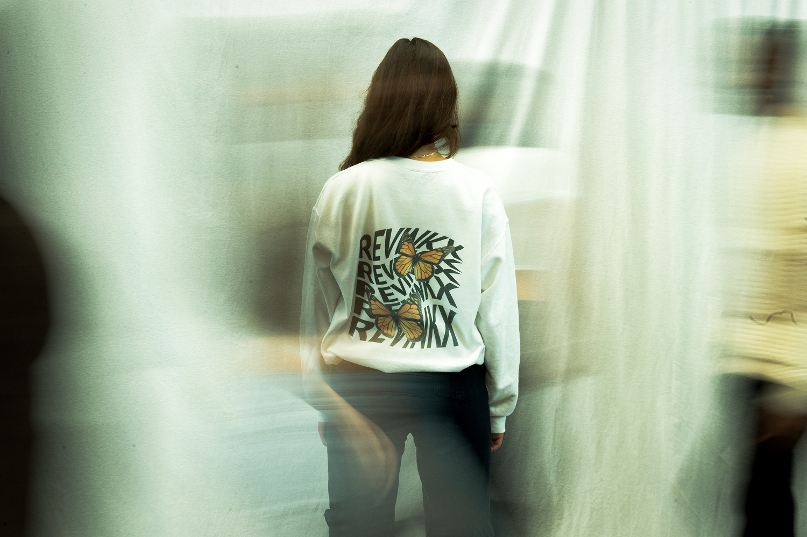
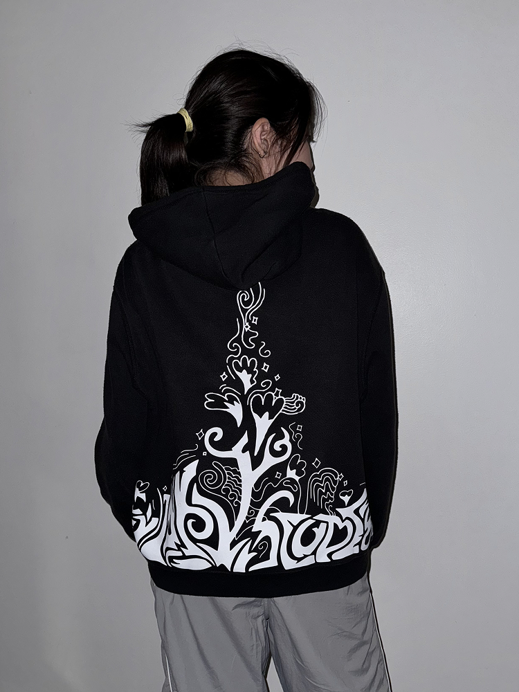
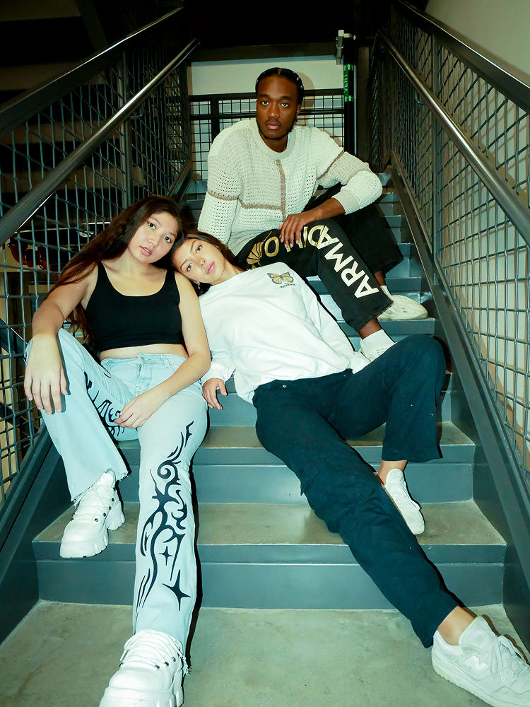
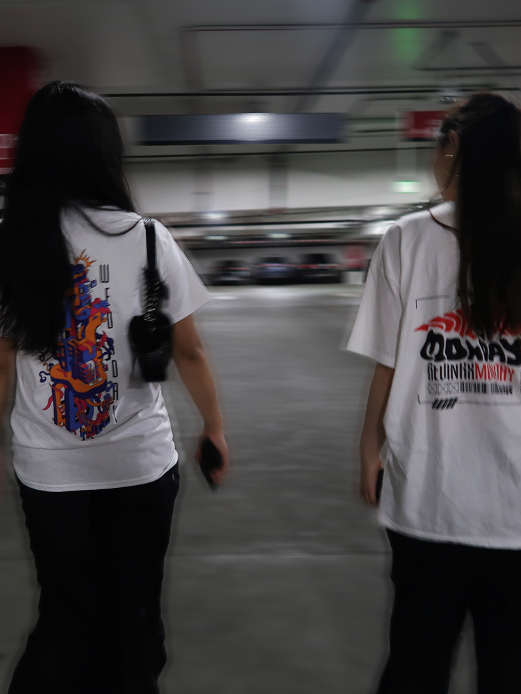
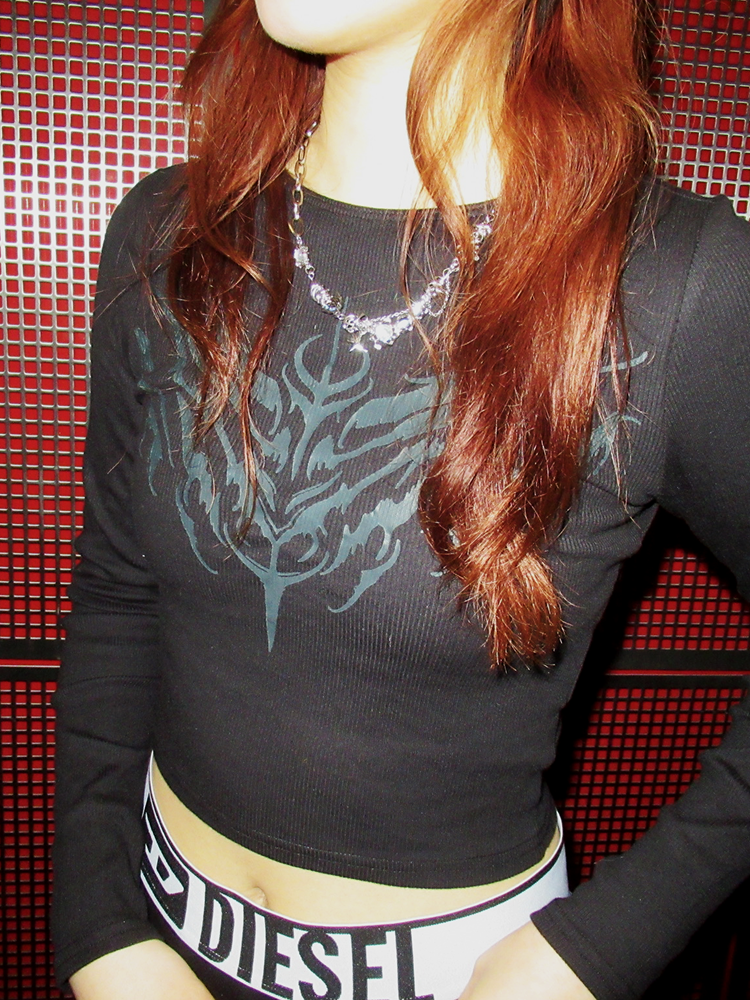
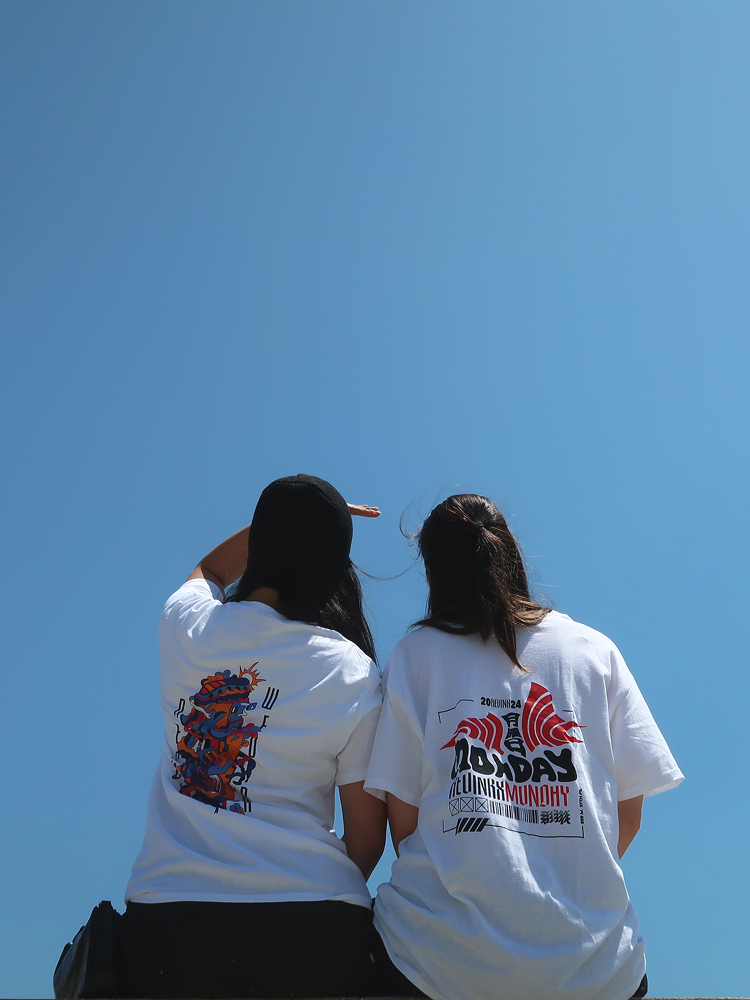
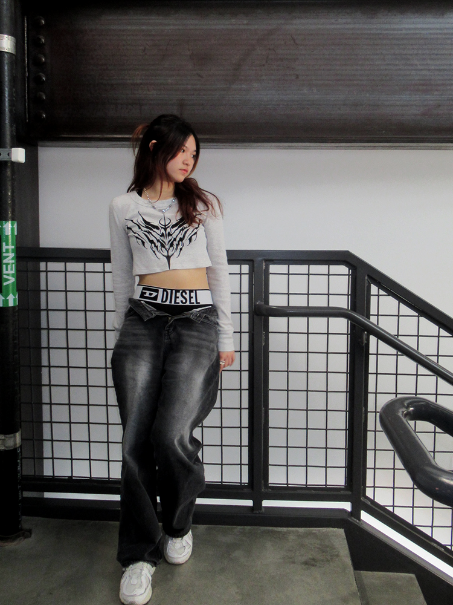
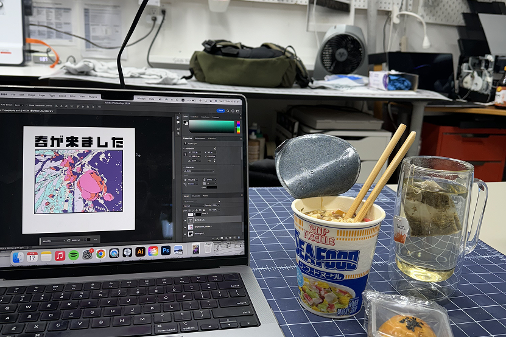
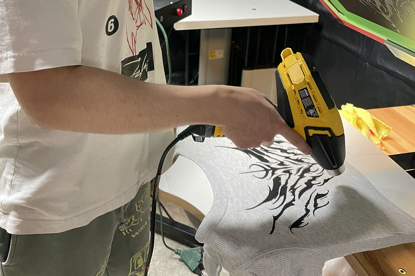
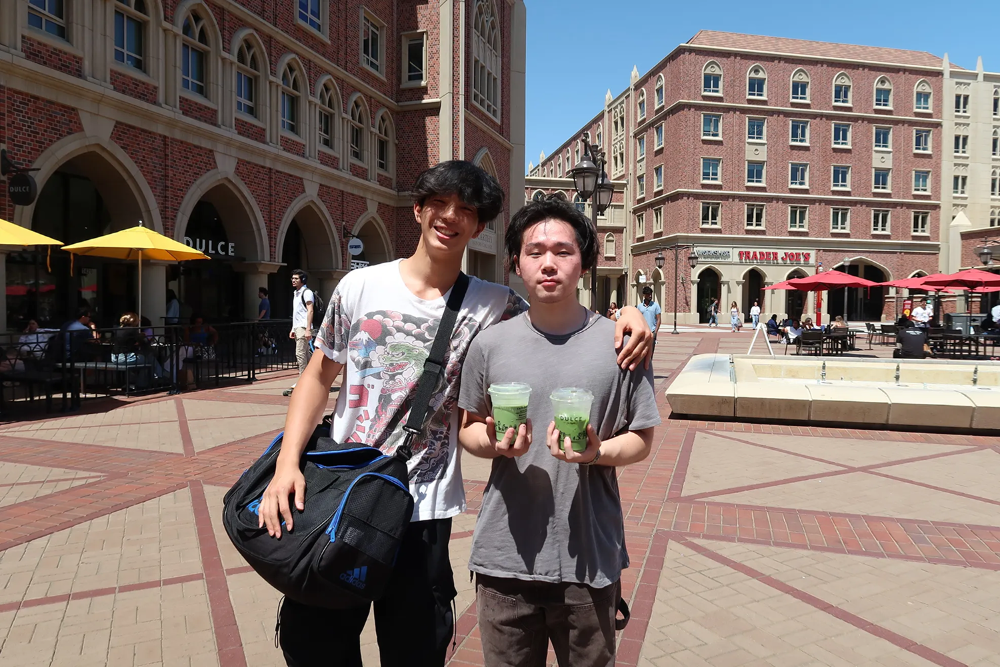

Introduction
Revink Studios was my first go at creating a startup. Co-founded with my friend Hudson Kaneko, Revink helps artists like myself design clothing and sell their work without having to go through the technicalities of going to market.

Helping artists go to market with fashion, creating a bridge between creative expression and commercial success across multiple platforms.
Co-Founder
Lead Designer
Creative Director
Hudson Kaneko (Co-Founder)
Tongfei Zhu (Co-Founder)
Ashley Chan (Marketing)
Esther Kim (Developer)
Asia Chang (Product Manager)
Sep 2023 - May 2024
Adobe Photoshop
Adobe After Effects
Procreate
Screen Printing
Direct to Film
Embroidery Machine
Revink Studios was my first go at creating a startup. Co-founded with my friend Hudson Kaneko, Revink helps artists like myself design clothing and sell their work without having to go through the technicalities of going to market.






I was the first ‘client’ for Revink. I took commissions from my friends and put my designs on their clothes. In turn, they had to model for us. During the process, we experienced lots of pivots. We started off as a sustainable fashion company, then pivoted to an easy-to-order customizable sticker brand, a custom design brand, and then eventually landed on this idea. It really took us quite a while to get to this point.
It’s always exciting to start something. Hudson and I started Revink in his dorm room pretty spontaneously when he saw my artwork. We took Revink pretty seriously and even took it to class as part of our project. However, the biggest challenge we faced was staying focused and communicating our vision clearly.
For the longest time, neither we nor the team we worked with were clear on what Revink did and how we were going to operate. Selfishly, as an artist, all I wanted to do was put my own artwork onto clothes. With that in mind, I didn’t really delegate as much time as I should’ve into actually growing the business.
Instead, Hudson and I would camp out in his studio, make clothes and test out new ideas. Realizing that it might be more fun to just make clothes for ourselves, we eventually pivoted from Revink entirely and started a pure fashion brand called Spire.


Revink was overall very enjoyable. As my first startup, I definitely learned a lot from this experience and the mentors I met throughout the entire process. Tackling this project made me a lot more aware of the intricate steps that startup founders and business owners need to consider.
My biggest takeaway is definitely learning about the importance of feedback. The biggest difference transitioning from an artist to a designer is I’m making things for someone else’s need rather than my own. Realizing this made me a much better designer and made our business idea make a lot more sense.
